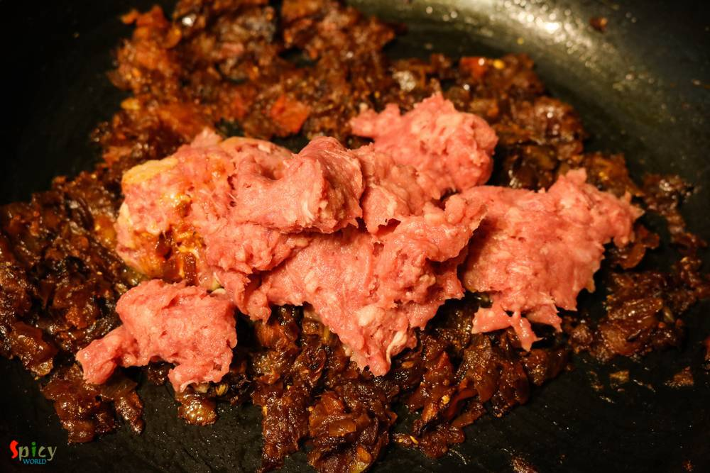

Simple and Easy Recipes
Keema Aloo / Minced Mutton Curry with Potatoes
© 2016 Spicy World, Published on: Jun 22, 2016
'Keema Aloo' is my favourite curry when it comes to a fuss free but yummy dinner. It's so rich and spicy that there is no other meat curry which you can make in such a less time. I used mutton keema but feel free to use chicken mince. After adding the cubed potatoes, this dish becomes a killer ! Serve this with plain rice or paratha, every time 'keema aloo' will be a hit. It is also a very good maincourse option for big party or any get together. Try this in your kitchen and enjoy.

Ingredients
- 1 cup of minced mutton.
- 1 big onion, chopped.
- 1 and half Teaspoon of ginger and garlic paste.
- 1 big tomato, chopped.
- Spice powder (half Teaspoon of turmeric powder, 1 Teaspoon of red chilli powder, 1 Teaspoon of roasted coriander powder, half Teaspoon of roasted cumin powder).
- Salt and sugar.
- 2 - 4 green chilies.
- 1 big potato, cut into cubes.
- 4 Tablespoons of oil.
- 1 Teaspoon of garam masala powder.
- Water.
- A handful of green peas.
- Some chopped coriander leaves.


Steps
Heat half of the oil in a pan.
Fry the cubed potatoes in hot oil for 6 minutes. Then remove them from oil.
Add the remaining oil in the pan.
Fry the chopped onion with pinch of salt till it becomes golden.
Then add ginger and garlic paste, chopped tomatoes. Cook for 10 minutes.
When the tomatoes become mushy add all of the spice powder and half Teaspoon of sugar. Mix well for 5 minutes.
Then add the minced mutton. Cook for 10 minutes.
Add a cup of water, more salt, green chilies and green peas. Cook for 15 - 20 minutes.
Lastly add garam masala powder and chopped coriander leaves. Mix well and turn off the heat.
Your keema aloo is ready ...
Serve this hot with plain rice, paratha or naan ...
")